潜能熔炉
本站支持中英文站内搜索。带 ↗ 的链接指向外部网站；各页来源版本见页脚。

位置
世界生成时，为潜能熔炉确定最多10个候选位置，均在凛冽雪山内部、远离边缘，彼此至少400米，距世界中心至少500米。靠近任一位置后，熔炉永久放在那里，取消其他候选。发现后地图出现神像图标。
用途
可作为制作站，升级武器、护甲和工具。每次消耗与物品阶段对应的一个神像，无需其他材料。无论结果如何，神像都会消耗；与普通升级不同，没有最高物品等级。
制作有两种可能结果：
- 65%概率成功，品质提高一级，尤其可超过等级4。
- 失败概率为 35%。物品会被摧毁，并返还基础制作成本加上当前等级成本的 35% 材料（向上取整）。超过 4 级后，每级按半级的材料成本计算。
神像列表
神像位于对应生物群系各种特殊地点的战利品宝箱中，有时也在前一或后一生态区。各神像页面列出所有可升级物品。
| 图片 | 名称 | 升级 | 来源 | 标识符 |
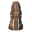 |
木制 防护 神像 | 主要 青青草原 护甲 | 青青草原: 废弃房屋, 废弃农场, 维京墓地. | Upgrader0Armor |
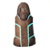 |
木制 战斗 神像 | 主要 青青草原 武器 与 工具 | Upgrader0Weapon | |
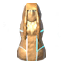 |
青铜防护神像 | 主要 黑暗林山 护甲 | 青青草原: 废弃房屋, 废弃农场, 维京墓地. 黑暗林山: 巨魔洞穴, 诡秘墓穴, 废弃前哨, 废弃小棚. |
Upgrader1Armor |
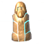 |
青铜战斗神像 | 主要 黑暗林山 武器 | Upgrader1Weapon | |
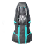 |
铁制防护神像 | 主要 幽暗沼泽 护甲 | 黑暗林山:巨魔洞穴, 废弃前哨, 废弃小棚. 泥泞沼泽: 地下圣堂, 沼泽墓地, 沼泽符文石塔. |
Upgrader2Armor |
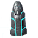 |
铁制战斗神像 | 主要 幽暗沼泽 武器 | Upgrader2Weapon | |
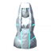 |
银 防护 神像 | 主要 凛冽雪山 护甲 | 泥泞沼泽:地下圣堂, 沼泽墓地, 沼泽符文石塔. 凛冽雪山: 废弃小屋, 山地塔楼, 哀啸之穴. |
Upgrader3Armor |
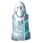 |
银 战斗 神像 | 主要 凛冽雪山 武器 | Upgrader3Weapon | |
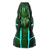 |
黑金属防护神像 | 主要 北境平原 护甲 | 凛冽雪山: 废弃小屋, 山地塔楼, 哀啸之穴. 北境平原: 平原宝箱, 封印之塔. |
Upgrader4Armor |
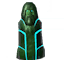 |
黑金属战斗神像 | 主要 北境平原 武器 | Upgrader4Weapon | |
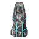 |
黑色大理石防护神像 | 主要 迷雾之地 护甲 | 北境平原: 平原宝箱, 封印之塔. 迷雾之地: 矮人守卫塔, 岩石尖塔, 腐疫矿区. 灰烬之地: 灰烬城堡, 腐朽之穴. |
Upgrader5Armor |
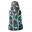 |
黑色大理石战斗神像 | 主要 迷雾之地 武器 | Upgrader5Weapon | |
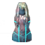 |
焰金属防护神像 | 主要 灰烬之地 护甲 | 迷雾之地: 矮人守卫塔, 岩石尖塔, 腐疫矿区. 灰烬之地: 灰烬城堡, 腐朽之穴. 北方深境: 木材营, 废弃村落, 墨尔克哈拉, 维京墓地 (北方深境), 沉船 (北方深境), 蜿蜒隧道. |
Upgrader6Armor |
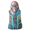 |
焰金属战斗神像 | 主要 灰烬之地 武器 | Upgrader6Weapon | |
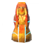 |
血金防护神像 | 主要 极北之地 护甲 | 北方深境: 墨尔克哈拉, 废弃村落, 维京墓地 (北方深境), 沉船 (北方深境). | Upgrader7Armor |
 |
血金战斗神像 | 主要 极北之地 武器 | Upgrader7Weapon |


所有神像描述为：这尊神秘的神像蕴含着神明的潜在神力，可赐予强大得祝福，也可能索取沉重的献祭。。堆叠上限20，重量0.5。
说明
- 符文石记载：“英格丽德和托尔贡决定在此敬奉诸神。诸神眷顾英格丽德，赐予她伟大恩惠。托尔贡却亲身体会了冒险的代价，她的剑在祭坛上碎裂。她立起此石，警告后来者在这座熔炉精炼的风险！”
- 除木剑外，木制武器无法在潜能熔炉升级。
- 尽管不是武器，工具锤、锄头、耕地耙、金属镐、镰刀和雪铲也都可以在潜力熔炉用战斗神像升级，以提高耐久度。
- 屠夫刀和鹿角镐等没有等级的物品无法升级。
- 每种物品仅能用对应阶段神像升级，少量例外列在神像页面。例如，棍棒、石斧、燧石矛和粗弓用木制战斗神像，皮甲和破布用木制防护神像。
图片库
-
地图 图标的该 潜力熔炉
-
外观


| 生物群系 | |||||||||||||||||||
|---|---|---|---|---|---|---|---|---|---|---|---|---|---|---|---|---|---|---|---|
| 重要 地点 |
| ||||||||||||||||||
| 资源 采集点 |
| ||||||||||||||||||
UpgradeStation (station)
The Forge of Potential is a unique Point of interest found in the Mountain.
Location
During world generation, up to 10 spawn locations are determined for The Forge of Potential. All spawn locations are within Mountain biomes away from their edges, each at least 400 meters apart, and at least 500 meters away from the world center. Approaching any of these locations will permanently place The Forge of Potential there, nullifying all other potential spawns. When discovered, an idol icon will appear on the world map.
Usage
It can be used as a Crafting station to upgrade Weapons, Armor and Tools. An upgrade at the Forge of Potential costs a single idol of the tier that matches the item, and no other materials. The idol is consumed regardless of the result, and unlike normal upgrades there is no maximum item level.
The craft has two possible outcomes:
- A 65% chance to succeed and increase the item quality by one level, notably it can increase above level 4.
- A 35% chance to fail. The item is destroyed and 35% (rounded up) of the materials of the base item crafting cost plus the cost of the item's current level are returned. Above level 4, each level counts as half a level for the material cost.
List of Idols
Idols are found in Loot chest of various points of interest of theirs corresponding Biomes, and sometime in the previous or next biomes. Each idol's page lists every item it upgrades.
All idols have the description: This mysterious idol is brimming with the potential of the gods. It could grant a powerful boon, or demand a great sacrifice. They stack to 20 and weigh 0.5.
Note
- The runestone text is: "Ingrid and Torgunn decided to honour the gods in this place. They smiled upon Ingrid, granting her a great boon. Torgunn on the other hand, was made all too aware of the risk she was taking, as her blade shattered into pieces upon the altar. She raised this stone to warn others of the risk attempting refinement at this forge!"
- Wooden Weapons cannot be upgraded at the Forge of Potential with the exception of the Wooden Sword.
- Despite not being weapons, the Hammer, Hoe, Cultivator, Metal Pickaxe(s), Scythe and Snow Shovel can all be upgraded at the Forge of Potential with Battle Idols to increase their Durability.
- Items which have no level such as the Butcher Knife and Antler Pickaxe cannot be upgraded.
- Each item can only be upgraded with the idol of its own tier, with a few exceptions listed on the idol pages. For example, the Club, Stone Axe, Flint Spear and Crude Bow use the Wooden Battle Idol, while leather armor and rags use the Wooden Protection Idol.
Gallery
-
Map icon of the Forge of Potential
-
Appearance
| Biomes | Meadows • Black Forest • Ocean • Swamp • Mountain • Plains • Mistlands • Ashlands • Deep North • World Edge | ||||||||||||||||||
|---|---|---|---|---|---|---|---|---|---|---|---|---|---|---|---|---|---|---|---|
| Points of interest |
| ||||||||||||||||||
| Resource nodes |
| ||||||||||||||||||